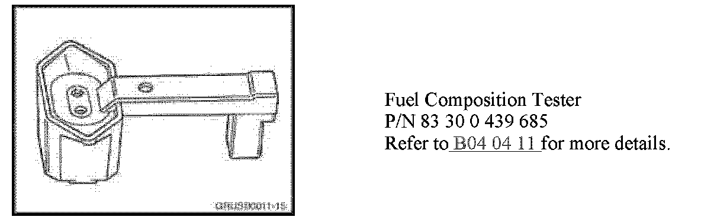
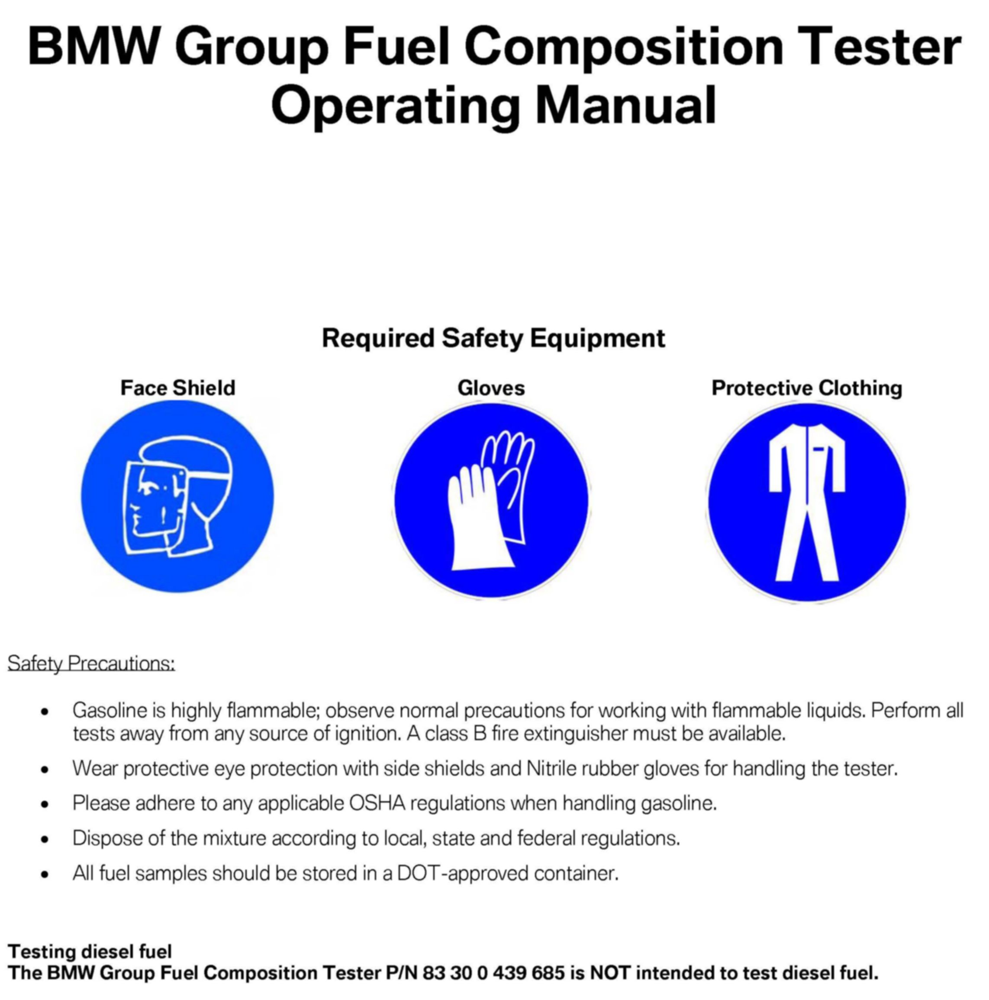
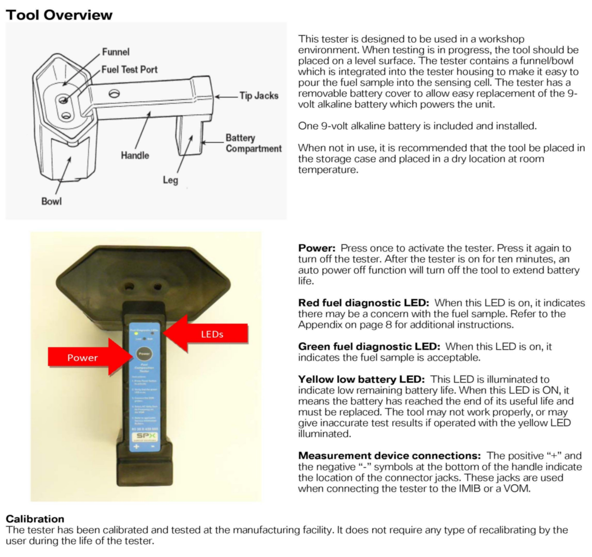
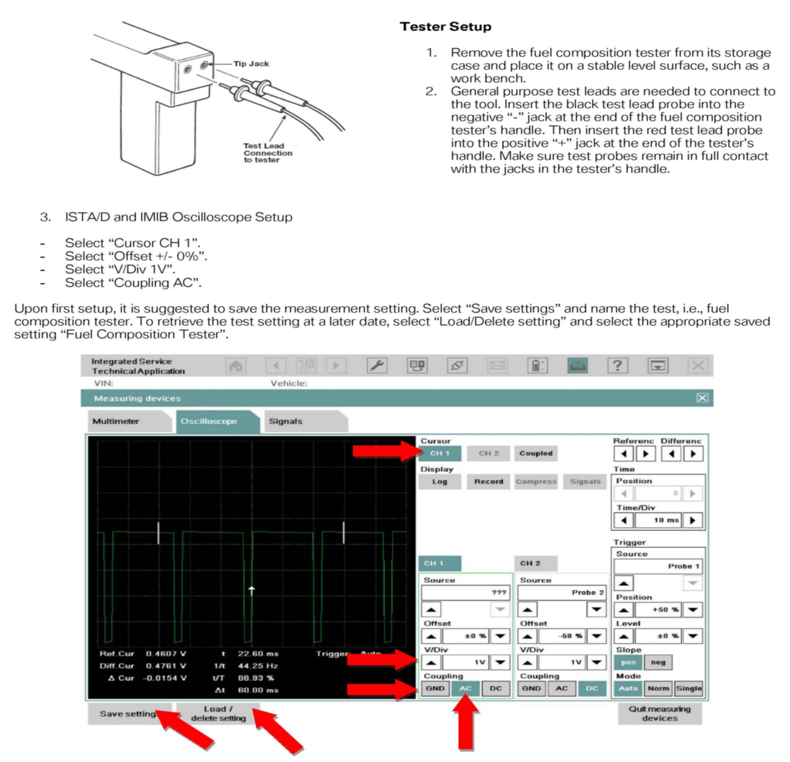
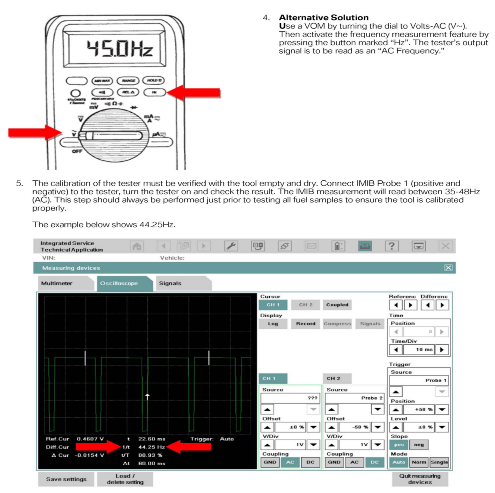
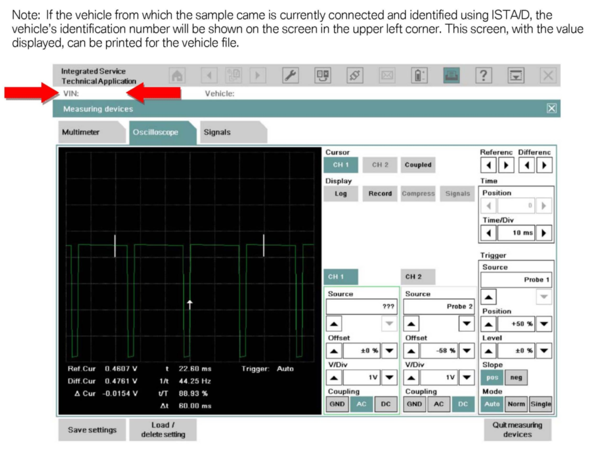
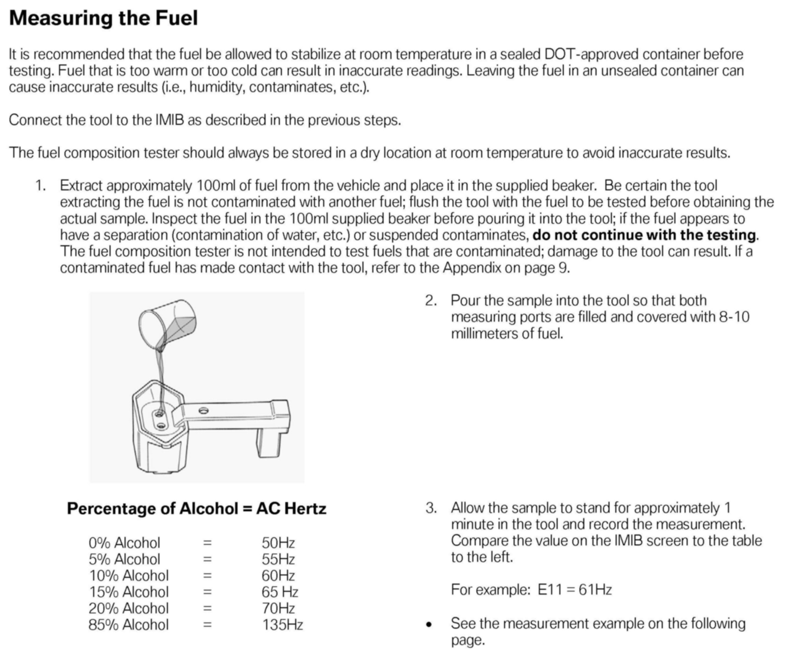
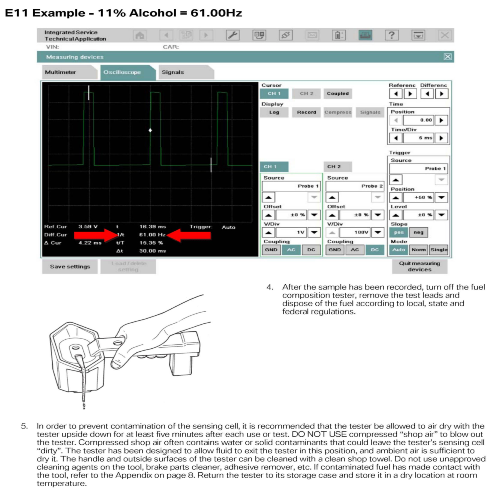
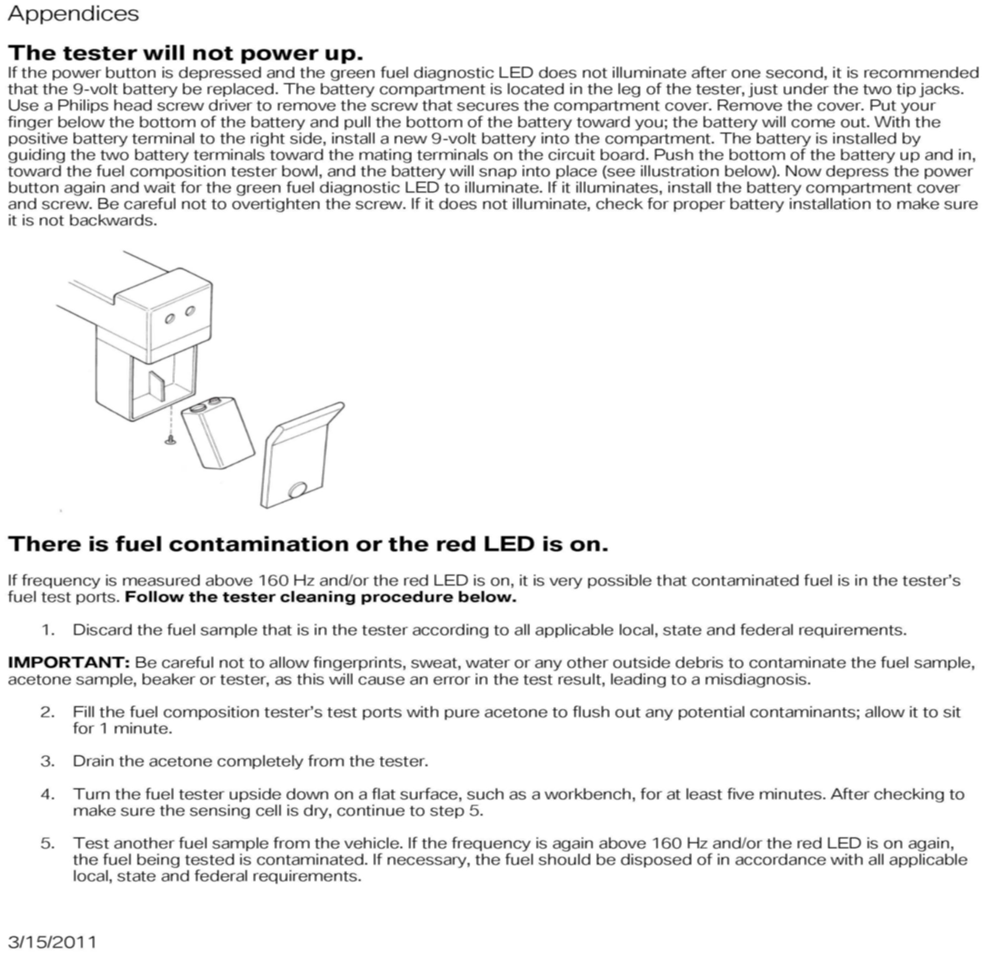

Fuel System - High Alcohol Fuel Detection
SI B13 05 10Fuel Systems
April 2011
Technical Service
This Service Information bulletin replaces SI B13 04 06 dated August 2006.
SUBJECT
Testing Fuel Composition
MODEL
All
SITUATION
Fuel blends containing a high percentage of alcohol (10% and above), mainly ethanol, are becoming more commercially available. Usage of E85 or any other high alcohol content blend (e.g., E30) in BMW vehicles will cause various drivability complaints (cold start problems, stalling, reduced performance, poor fuel economy, etc.); may cause excessive emissions; and may cause irreversible damage to engine, emission control and fuel delivery systems due to incompatibility of materials with alcohols. Refer to SI B13 01 06 Alcohol Fuel Blends in BMW Vehicles for complete details.
In order to correctly diagnose various drivability complaints caused by fuel blends with a high level of ethanol content, BMW is providing you with an electronic fuel composition tester.

Fuel Composition Tester
P/N 83 30 0 439 685
Refer to B04 04 11 for more details.
PROCEDURE
Safety Precautions:
^ Gasoline is highly flammable; observe normal precautions for working with flammable liquids. Perform all tests away from any source of ignition. A class B fire extinguisher must be available.
^ Wear protective eye protection with side shields and Nitrile rubber gloves for handling the tester.
^ Please adhere to any applicable OSHA regulations when handling gasoline.
^ Dispose of the mixture according to local, state and federal regulations.
Refer to the attached procedure for testing the fuel composition of gasoline.
WARRANTY INFORMATION
Component damage, malfunctions, or any drivability problems verified to be caused by the use of fuels containing more than 10% ethanol (or other oxygenates with more than 2.8% oxygen by weight) will not be covered under BMW warranties as this is not considered a defect in materials or workmanship. Always document the results found on the vehicle repair order whenever performing this test.
ATTACHMENTS








B130510 Fuel Composition Tester